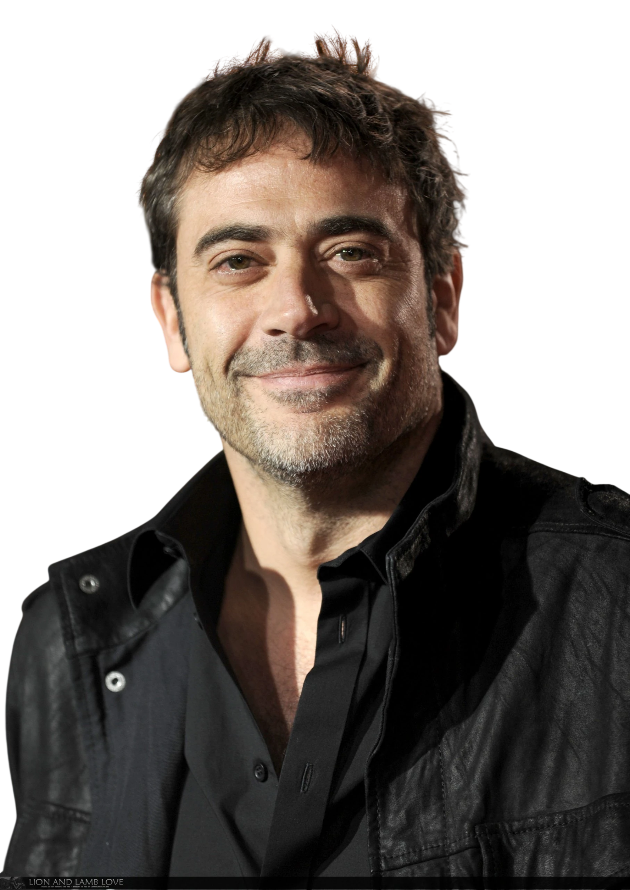
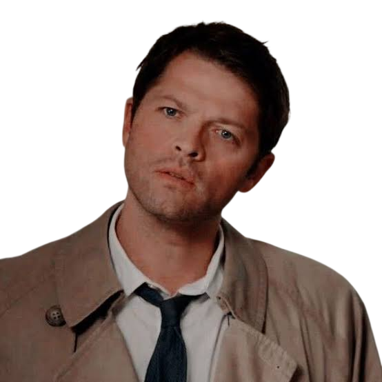
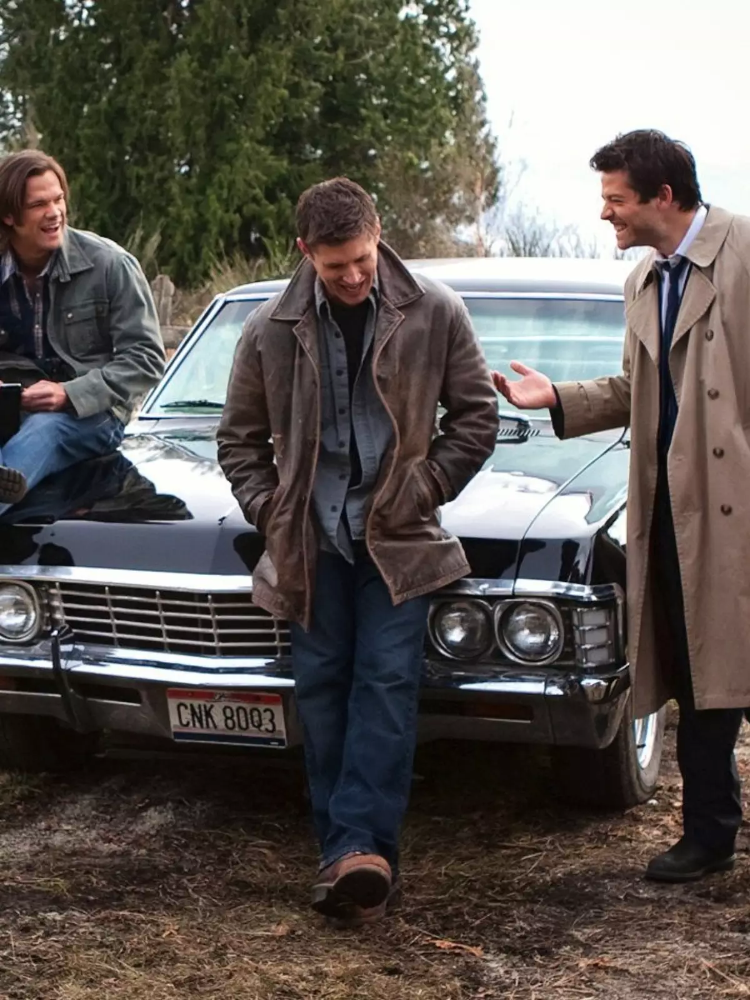

Dean Winchester
Dean Winchester é um dos dois protagonistas da série Supernatural. Nascido em 1979, teve a infância interrompida quando sua mãe foi morta por um demônio. Criado pelo pai para ser um caçador, ele dedicou a vida a proteger o irmão menor, Sam, e a combater forças sobrenaturais ao longo de 15 temporadas.
para curiosidades
Sam Winchester
Samuel "Sam" Winchester (interpretado por Jared Padalecki) é um dos internacionais protagonistas da série Supernatural. Nascido em 2 de maio de 1983, ele perdeu a mãe, Mary, para um demônio quando bebê. Criado na estrada pelo pai, John, para caçar monstros, Sam tentou ter uma vida normal estudando em Stanford, mas retornou à caçada após tragédias pessoais.
para curiosidades
John Winchester
John Winchester (1954–2006) é um personagem central da série Supernatural. Ex-fuzileiro naval e mecânico, sua vida mudou em 1983 quando sua esposa Mary foi morta pelo demônio Azazel. Ele virou caçador e treinou os filhos Dean e Sam para combater o mal, tornando-se um pai severo e obcecado por vingança.
para curiosidades
Castiel
Na série Supernatural, Castiel começa como um anjo comum e soldado do exército celestial. Após ser morto e ressuscitado por Deus, ele é promovido ao posto de serafim (um anjo de classe superior, com mais poder e autonomia em relação ao Céu). Ele não é um arcanjo.
para curiosidades
Impala
O Chevrolet Impala de 1967 preto é o lendário carro da série Supernatural. Chamado carinhosamente de "Baby" por Dean Winchester, o veículo foi herdado de seu pai, John Winchester, e funciona como casa, arsenal e o verdadeiro terceiro protagonista da história ao longo das 15 temporadas.
para curiosidades